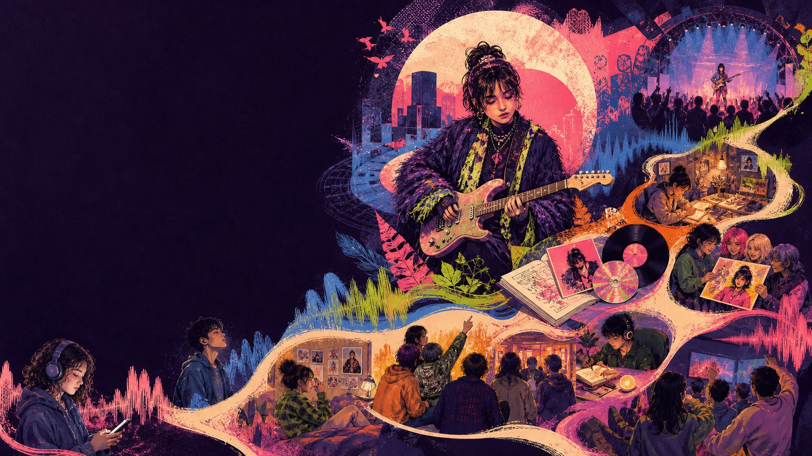
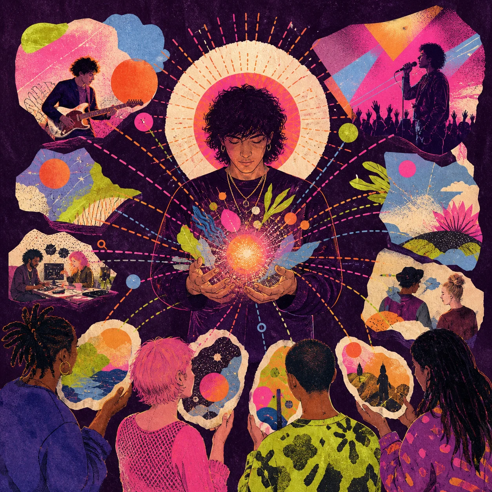
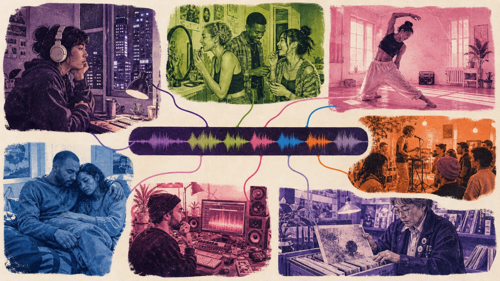
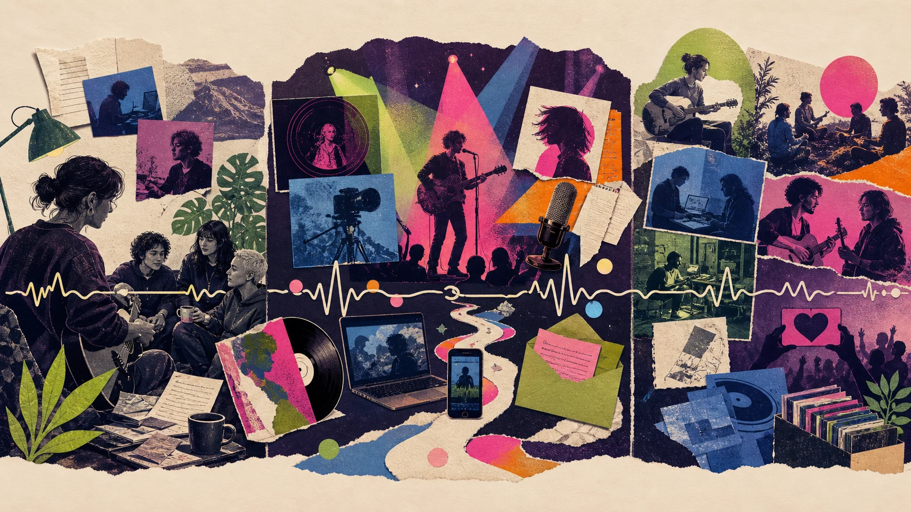
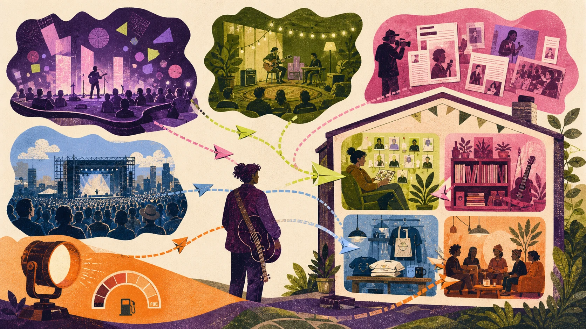
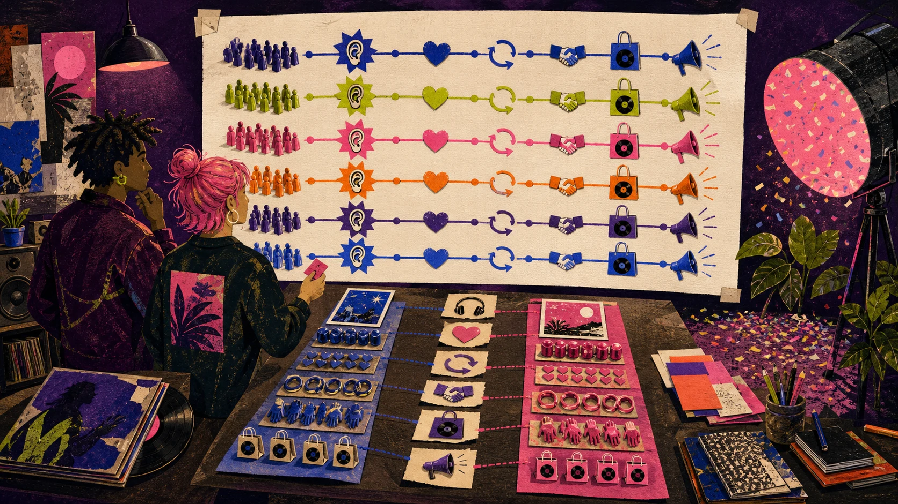
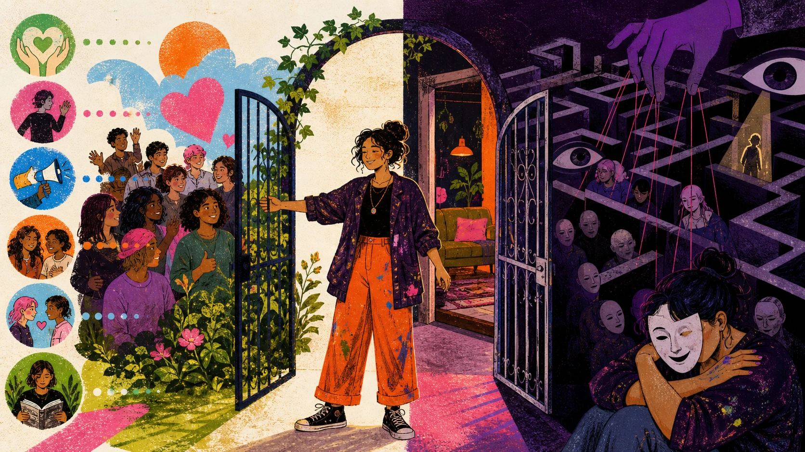

작품·제품
곡, 앨범, 공연, 영상, 물건과 멤버십이 실제로 주는 가치.

01 · 네 단어 분리
곡, 앨범, 공연, 영상, 물건과 멤버십이 실제로 주는 가치.
아티스트가 반복하려는 관점·감정·행동 약속과 경계.
청중이 실제 경험 뒤 기억하고 기대하고 재해석한 것.
누구와 어디서 만나 무엇을 다음 행동으로 제안할지 시험하는 일.
약한 작품을 포장으로 영구히 감출 수 없고, 일관성을 위해 모든 사생활을 공개하거나 가짜 캐릭터를 24시간 연기할 필요도 없습니다.
02 · 로고보다 살아 있는 약속

친밀하지만 낯선슬프지만 춤추는전통적이지만 미래적인사적인데 함께 부르는
이 긴장이 리듬, 음색, 가사, 목소리와 제작에서 실제로 들려야 합니다.
같은 색·템포·포즈를 반복하는 대신 서로 다른 곡과 시대에도 관점, 감정 약속, 관계 원칙을 알아볼 수 있게 합니다.
| 층 | 반복 가능한 문법 | 위험 |
|---|---|---|
| 소리 | 질감·공간·보컬 시점·리듬 긴장 | 모든 곡을 같은 프리셋으로 만들기 |
| 시각 | 색 관계·빛·재료·프레임·움직임 | 앨범마다 표면만 복사하기 |
| 언어 | 설명의 거리·유머·문장 리듬 | 사생활을 계속 캐릭터 대사로 만들기 |
| 라이브 | 관객 역할·무대 거리·접근·가격 | 녹음 복제를 일관성이라 보기 |
| 관계 | 응답·크레딧·커뮤니티 규칙 | 가짜 친밀감과 무제한 접근 약속 |
16명의 음악 전문가를 인터뷰한 탐색 연구는 시각 정체성이 음악 지각과 관련될 수 있음을 논의하지만 “좋은 커버가 성공을 만든다”는 보편 인과 법칙은 아닙니다. Chețan & Iancu, 2023
03 · 타깃보다 장면

언제, 누구와, 어떤 감정·기능을 위해 듣나요?
이미 어떤 곡·플레이리스트·공간·행동이 그 일을 하나요?
무엇이 낯설고, 듣고 난 뒤 어떤 작은 이동이 자연스러운가요?
세 장면을 가설로 세운 뒤 팬·비팬 인터뷰, 공연 반응과 행동 데이터로 좁힙니다. 넓은 집단에 상상으로 성격을 붙이지 않습니다.
04 · 직선 깔때기 대신 순환
짧은 영상, 공연 포스터, 추천과 협업에서 처음 만납니다.
한 구절·한 곡·라이브 한 장면을 실제로 경험합니다.
다음번에 소리, 이름, 시각 세계를 알아봅니다.
다른 곡과 이야기, 공연, 공동체에서 개인 의미를 찾습니다.
저장, 연락 동의, 티켓·음악·상품처럼 가치를 교환합니다.
새 발매가 없어도 카탈로그와 공연으로 돌아옵니다.
친구에게 소개하고 해석·커버·팬 창작으로 의미를 확장합니다.
메타분석은 반복 노출이 친숙성·호감과 관련될 수 있음을 보여 주지만 자극·횟수·인식·측정에 따라 달라집니다. 같은 광고를 끝없이 틀라는 공식이 아닙니다. Montoya et al., 2017
인공 음악시장에서는 다른 사람의 선택을 볼수록 결과가 더 불평등하고 예측하기 어려웠습니다. 인기 신호는 특히 “무엇을 먼저 들어볼지”에 영향을 줄 수 있습니다. Salganik et al., 2006
05 · 발매는 긴 곡선

바뀌는 플랫폼 규칙: Spotify 공식 페이지도 현재 피칭을 최소 7일 전, 다른 페이지는 최소 2주 전으로 다르게 안내합니다. 더 긴 여유를 두고 제출 직전 다시 확인하세요. 피칭은 게재 보장이 아닙니다. Spotify for Artists
06 · 채널 생태계

| 채널 | 예 | 좋은 점 | 위험 | 남길 것 |
|---|---|---|---|---|
| 빌린 | 스트리밍·소셜 | 큰 발견 가능성 | 규칙·도달 변경 | 카탈로그 연결·학습 |
| 번 | 언론·공연장·협업·추천 | 맥락과 신뢰 | 일정·선택 통제 어려움 | 관계·인용·재사용 자료 |
| 산 | 광고·스폰서 노출 | 속도·표본 통제 | 돈이 멈추면 노출도 멈춤 | 증분 전환 증거 |
| 더 직접 | 웹·동의 이메일·직접 상점 | 이식성·관계 | 운영·보안·동의 책임 | 권한·기록·아카이브 |
Bandcamp는 2026년 현재 평균 82%가 아티스트·레이블 몫이고 보통 24–48시간 내 지급된다고 설명합니다. 플랫폼 자기보고이며 제작·배송·세금 뒤 이익은 아닙니다. Bandcamp
음악 경험맥락과정관계다음 행동
하나의 게시물이 전부 할 필요는 없습니다. 아티스트는 모든 채널의 전업 인플루언서가 될 필요도 없습니다.
Fugazi의 정책, Radiohead의 가격 실험, Amanda Palmer의 직접 관계, Taylor Swift의 재녹음은 각각 다른 메커니즘입니다. 기존 팬·자본·권리·인프라를 빼고 복제하지 않습니다.
07 · 허영 지표 대신 상태 변화

| 알고 싶은 것 | 가능한 증거 | 꼭 붙일 조건 |
|---|---|---|
| 음악을 실제 경험했나? | 재생 시작·의미 있는 시청·완주 | 곡 길이·형식·유입 맥락 |
| 더 깊게 갔나? | 저장·다른 곡·프로필·답장 | 행동한 사람 / 의미 있는 청취 |
| 가치 교환이 있었나? | 동의 연락·티켓·음악·상품 | 적격 방문자·환불·직접비 |
| 관계가 남았나? | 30·90일 재방문·재구매 | 같은 시작 코호트 |
| 자발적 전파가 있나? | 추적 공유·추천·팬 창작 | 사적 추천은 관측 불가 |
가설, 한 변경 변수, 같은 자원의 비교, 주 지표와 분모, 숨김·이탈·피로 같은 보호 지표, 판단일과 중단 규칙을 먼저 씁니다.
클릭 하나로 음악 정체성을 계속 바꾸거나 여러 변수를 동시에 바꾸고 원인을 단정하지 않습니다. 자연 증가분을 모두 광고 성과로 세지 않습니다.
YouTube 공식 도움말도 아티스트 분석의 Audience가 일부 시청자만 나타낼 수 있고 수익은 추정치라고 밝힙니다. 서로 다른 플랫폼의 ‘뷰’를 같은 단위처럼 더하지 마세요. YouTube Analytics for Artists
08 · 관계를 태우지 않는 성장

목적·빈도·처리 주체를 알리고 필요한 정보만 받습니다.
거절·탈퇴를 가입보다 어렵게 만들지 않습니다.
광고·협찬·무료 제공을 잘 보이게 공개하고 가짜 지표를 사지 않습니다.
팬의 호감과 실제 상호 관계를 혼동시키지 않고 휴식·사생활을 지킵니다.
09 · 12주 실행
기존 음악·프로필·검색 경로를 처음 온 사람처럼 보고 팬·비팬·협업자에게 기대와 실제 경험을 묻습니다. 권리·크레딧·링크·동의 오류부터 고칩니다.
한 문장 약속, 긴장 두 쌍, 행동 가치와 경계, 청중 장면 세 개, 반복 코드와 버릴 클리셰를 씁니다.
한 곡에 경험·맥락·과정이라는 세 입구를 만들고, 다음 행동은 하나씩 둡니다. 한 변수만 바꿔 비교합니다.
동의 기반 직접 채널의 지속적 가치와 작은 공연·구매·선주문을 시험하고 문의·환불·접근성 마찰을 기록합니다.
같은 시작 코호트의 의미 있는 청취→행동→재방문과 비용을 보고 유지·수정·중단할 것 하나씩을 고릅니다.
10 · 근거의 범위
전체 근거, 사례의 복제 한계, 실행 체크리스트는 상세 연구 문서에서 확인하세요. 생성 이미지의 원문 프롬프트는 PROMPTS.md에 있습니다.